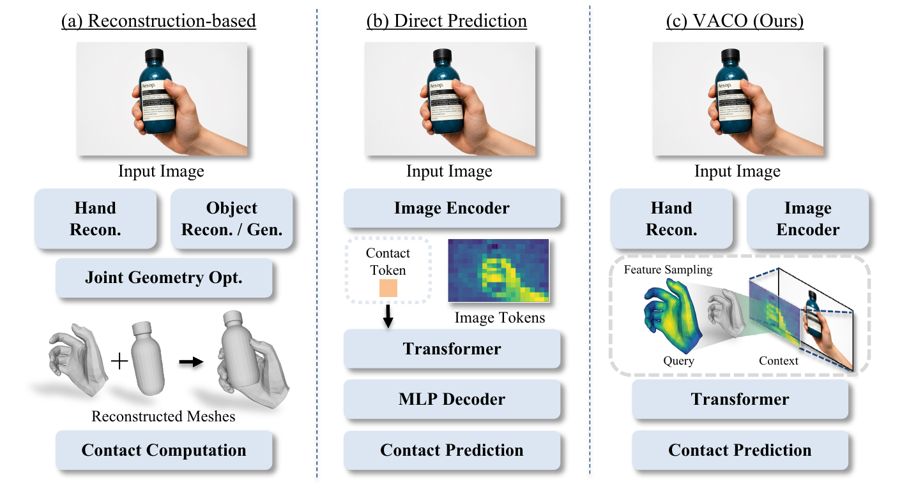

VACO: Vertex-Aligned Decoding for Dense Hand Contact Estimation from a Single Image
(under review)

Abstract
Dense hand contact estimation from a single RGB image is a foundational primitive for dexterous manipulation and 3D interaction analysis. Direct predictors typically decode the entire per-vertex contact map from one shared query, leaving individual vertices ungrounded in the image and smearing contact across adjacent, non-touching surfaces. We present VACO, a vertex-aligned decoder in which each MANO vertex samples local image features at its projected location. A hand-reconstruction backbone, jointly trained for reconstruction and contact, predicts these locations at inference without an auxiliary reconstructor. Training uses noise-perturbed ground-truth projections and end-to-end feature adaptation to improve robustness and contact-sensitive features. A single VACO checkpoint sets a new state of the art on five benchmarks spanning hand–object, hand–human, hand–scene, and bimanual interactions. It improves F1 by +20.7 pp over the strongest prior direct predictor on Hi4D and generalizes to the held-out HOT3D and HOCap, with gains of +5.5 and +2.7 pp. The resulting contact predictions also improve downstream HOI reconstruction.